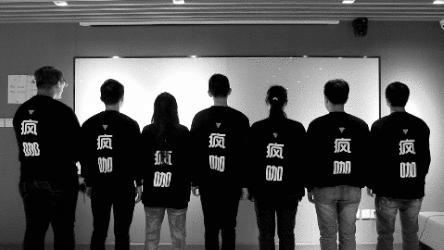
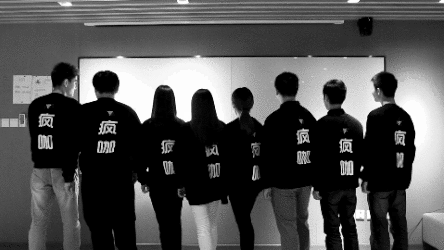
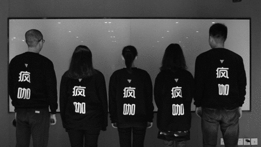

-
好看部 别名"脑洞系"，为了美和疯而活，负责把美的，不一样的，好玩儿的东西分享给大家。
市场部
好看部
-
好喝部 经过定期培训喝疯咖咖啡师培训认证，认真快速的制作每一杯咖啡，为我们的味蕾负责。
门店人员
好喝部  -
好快部 什么，30分钟送达？不！我们的目标是瞬移过去！
运营部
好快部  -
好穷部 没钱也要谋发展，招人不但靠一张嘴，最靠谱的后勤部门，没有之一！
总经办
好穷部  -
好穷部 没钱也要谋发展，招人不但靠一张嘴，最靠谱的后勤部门，没有之一！
总经办
好穷部 -
好玩部 长期研发更丰富的咖啡品类有趣 的食品，视觉嗅觉味觉的三重合体，只有想不到，没有做不到。
产品研发部
好玩部